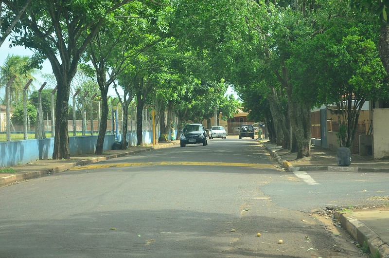

DESTAQUES
Explore Presidente Prudente
Conheça os principais temas disponíveis no PrudenLoc.
Descubra os monumentos, bairros, tradições, eventos e manifestações culturais que fazem de Presidente Prudente uma cidade única.
Conheça Nossa HistóriaO PrudenLoc é um projeto criado para valorizar a memória, cultura, história e identidade de Presidente Prudente. Nosso objetivo é divulgar não apenas os locais mais conhecidos da cidade, mas também os bairros, comunidades e histórias esquecidas que ajudaram a construir nosso município.
Conheça os principais temas disponíveis no PrudenLoc.
Alguns dos locais mais importantes da cidade.




Habitantes
Bairros
Anos de História
De histórias para conhecer
Você conhece uma história interessante, um monumento pouco conhecido ou um evento do seu bairro? Compartilhe conosco e ajude a preservar a memória de Presidente Prudente.